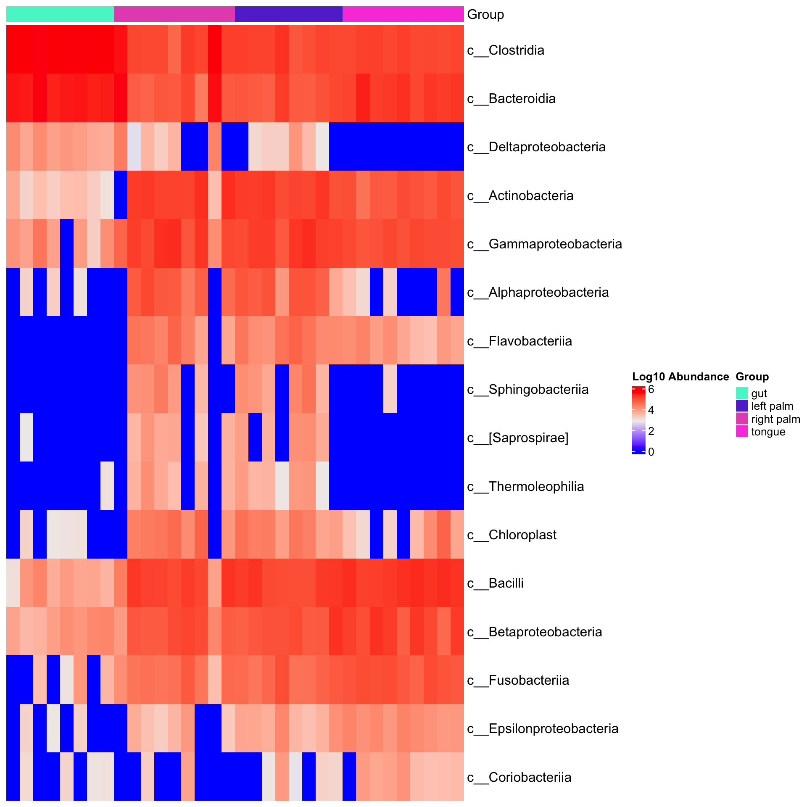
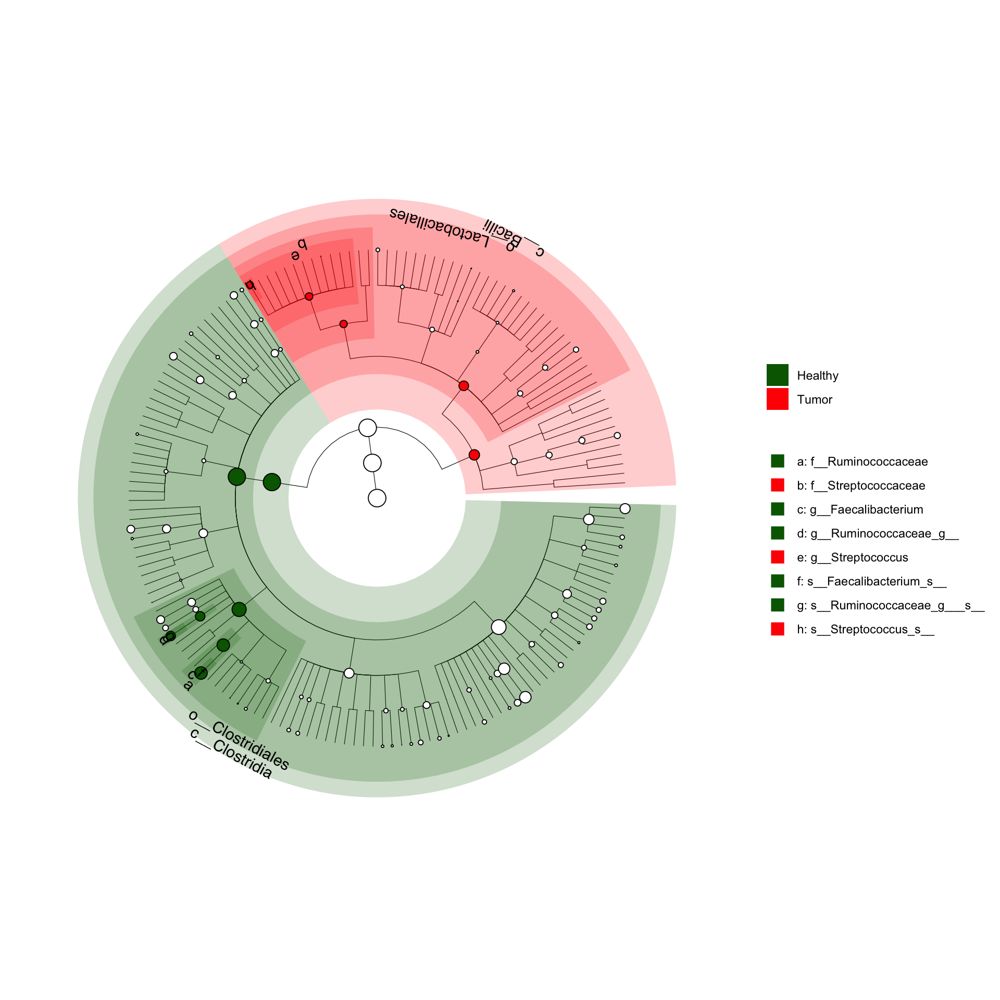

8 Save the plot
ggsave(“results/barplot.pdf”, p)
# Advanced Snakemake Features
Explore advanced Snakemake features that enhance workflow efficiency. Discuss dynamic rules, wildcard constraints, and conditional execution. Showcase how these features can be applied to optimize the data exploration workflow.
# Case Studies and Examples
Present real-world case studies demonstrating the application of Snakemake in the context of taxa abundance data. Include examples that showcase the synergy of R, Python, and Bash scripts for comprehensive data exploration.
## Best Practices and Optimization
Provide best practices for optimizing Snakemake workflows, emphasizing efficiency and reproducibility. Address common challenges and suggest strategies for effective workflow design in the context of data exploration.
# Conclusion
Summarize key takeaways, highlighting the benefits of an integrated Snakemake workflow for data exploration. Encourage readers to apply the demonstrated techniques to their own research projects.
<!--chapter:end:01_data_exploration_steps.Rmd-->
# Exploration of processded data
```r
library(tidyverse)## ── Attaching core tidyverse packages ──────────────────────── tidyverse 2.0.0 ──
## ✔ dplyr 1.1.4 ✔ readr 2.1.5
## ✔ forcats 1.0.0 ✔ stringr 1.5.1
## ✔ ggplot2 3.4.4 ✔ tibble 3.2.1
## ✔ lubridate 1.9.3 ✔ tidyr 1.3.1
## ✔ purrr 1.0.2
## ── Conflicts ────────────────────────────────────────── tidyverse_conflicts() ──
## ✖ dplyr::filter() masks stats::filter()
## ✖ dplyr::lag() masks stats::lag()
## ℹ Use the conflicted package (<http://conflicted.r-lib.org/>) to force all conflicts to become errors##
## microbiome R package (microbiome.github.com)
##
##
##
## Copyright (C) 2011-2022 Leo Lahti,
## Sudarshan Shetty et al. <microbiome.github.io>
##
##
## Attaching package: 'microbiome'
##
## The following object is masked from 'package:ggplot2':
##
## alpha
##
## The following object is masked from 'package:base':
##
## transform## Registered S3 method overwritten by 'gplots':
## method from
## reorder.factor DescTools
##
## Attaching package: 'microbiomeMarker'
##
## The following objects are masked from 'package:microbiome':
##
## abundances, aggregate_taxa
##
## The following object is masked from 'package:phyloseq':
##
## plot_heatmap##
## Attaching package: 'Matrix'
##
## The following objects are masked from 'package:tidyr':
##
## expand, pack, unpack8.1 Import data
Loading objects:
df_GlobalPatterns
df_ibd_phylo
df_dietswap
df_caporaso
df_kostic_crc
ps_GlobalPatterns
ps_ibd_phylo
ps_dietswap
ps_caporaso
ps_kostic_crc8.2 Dataset: ps_GlobalPatterns
phyloseq-class experiment-level object
otu_table() OTU Table: [ 19216 taxa and 26 samples ]
sample_data() Sample Data: [ 26 samples by 7 sample variables ]
tax_table() Taxonomy Table: [ 19216 taxa by 7 taxonomic ranks ]
phy_tree() Phylogenetic Tree: [ 19216 tips and 19215 internal nodes ]
Sample Variables[1] "X.SampleID" "Primer"
[3] "Final_Barcode" "Barcode_truncated_plus_T"
[5] "Barcode_full_length" "SampleType"
[7] "Description"
Number of levels in selected group[1] 1 2 3 4 5 6 7 8 98.3 Dataset: ps_ibd_phylo
phyloseq-class experiment-level object
otu_table() OTU Table: [ 36349 taxa and 91 samples ]
sample_data() Sample Data: [ 91 samples by 15 sample variables ]
tax_table() Taxonomy Table: [ 36349 taxa by 7 taxonomic ranks ]
Sample Variables [1] "sample" "gender" "age" "DiseaseState" "steroids"
[6] "imsp" "abx" "mesalamine" "ibd" "activity"
[11] "active" "race" "fhx" "imspLEVEL" "SampleType"
Number of levels in selected group[1] 1 2 3 4
8.4 Dataset: ps_dietswap
phyloseq-class experiment-level object
otu_table() OTU Table: [ 130 taxa and 222 samples ]
sample_data() Sample Data: [ 222 samples by 8 sample variables ]
tax_table() Taxonomy Table: [ 130 taxa by 3 taxonomic ranks ]
Sample Variables[1] "subject" "sex" "nationality"
[4] "group" "sample" "timepoint"
[7] "timepoint.within.group" "bmi_group"
Number of levels in nationality[1] 1 2
Number of levels in group[1] 1 2 3

8.5 Dataset: ps_caporaso
phyloseq-class experiment-level object
otu_table() OTU Table: [ 3426 taxa and 34 samples ]
sample_data() Sample Data: [ 34 samples by 8 sample variables ]
tax_table() Taxonomy Table: [ 3426 taxa by 7 taxonomic ranks ]
phy_tree() Phylogenetic Tree: [ 3426 tips and 3424 internal nodes ]
Sample Variables[1] "SampleType" "Year"
[3] "Month" "Day"
[5] "Subject" "ReportedAntibioticUsage"
[7] "DaysSinceExperimentStart" "Description"
Number of levels in selected group[1] 1 2 3 4


8.6 Dataset: ps_kostic_crc
phyloseq-class experiment-level object
otu_table() OTU Table: [ 2505 taxa and 177 samples ]
sample_data() Sample Data: [ 177 samples by 71 sample variables ]
tax_table() Taxonomy Table: [ 2505 taxa by 7 taxonomic ranks ]
Sample Variables [1] "X.SampleID" "BarcodeSequence"
[3] "LinkerPrimerSequence" "NECROSIS_PERCENT"
[5] "TARGET_SUBFRAGMENT" "ASSIGNED_FROM_GEO"
[7] "EXPERIMENT_CENTER" "TITLE"
[9] "RUN_PREFIX" "AGE"
[11] "NORMAL_EQUIVALENT_PERCENT" "FIBROBLAST_AND_VESSEL_PERCENT"
[13] "DEPTH" "TREATMENT"
[15] "AGE_AT_DIAGNOSIS" "COMMON_NAME"
[17] "HOST_COMMON_NAME" "BODY_SITE"
[19] "ELEVATION" "REPORTS_RECEIVED"
[21] "CEA" "PCR_PRIMERS"
[23] "COLLECTION_DATE" "ALTITUDE"
[25] "ENV_BIOME" "SEX"
[27] "PLATFORM" "RACE"
[29] "BSP_DIAGNOSIS" "STUDY_CENTER"
[31] "COUNTRY" "CHEMOTHERAPY"
[33] "YEAR_OF_DEATH" "ETHNICITY"
[35] "ANONYMIZED_NAME" "TAXON_ID"
[37] "SAMPLE_CENTER" "SAMP_SIZE"
[39] "YEAR_OF_BIRTH" "ORIGINAL_DIAGNOSIS"
[41] "AGE_UNIT" "STUDY_ID"
[43] "EXPERIMENT_DESIGN_DESCRIPTION" "Description_duplicate"
[45] "DIAGNOSIS" "BODY_HABITAT"
[47] "SEQUENCING_METH" "RUN_DATE"
[49] "HISTOLOGIC_GRADE" "LONGITUDE"
[51] "ENV_MATTER" "TARGET_GENE"
[53] "ENV_FEATURE" "KEY_SEQ"
[55] "BODY_PRODUCT" "TUMOR_PERCENT"
[57] "LIBRARY_CONSTRUCTION_PROTOCOL" "REGION"
[59] "RUN_CENTER" "TUMOR_TYPE"
[61] "BSP_NOTES" "RADIATION_THERAPY"
[63] "INFLAMMATION_PERCENT" "HOST_SUBJECT_ID"
[65] "PC3" "LATITUDE"
[67] "OSH_DIAGNOSIS" "STAGE"
[69] "PRIMARY_DISEASE" "HOST_TAXID"
[71] "Description"
Number of levels in DIAGNOSIS[1] 1 2



Df SumOfSqs R2 F Pr(>F)
bmi_group 2 104.0678 0.04177157 4.773379 0.01
Residual 219 2387.2862 0.95822843 NA NA
Total 221 2491.3540 1.00000000 NA NApsExtra info:
tax_agg = "Family" tax_trans = "identity" dist_method = "aitchison" 
8.7 Plot ggtree cladogram
Loading objects:
df_GlobalPatterns
df_ibd_phylo
df_dietswap
df_caporaso
df_kostic_crc
ps_GlobalPatterns
ps_ibd_phylo
ps_dietswap
ps_caporaso
ps_kostic_crc8.8 Getting otutable from phyloseq
8.9 Getting Bray-Curtis distances

8.10 Getting Jaccard distances